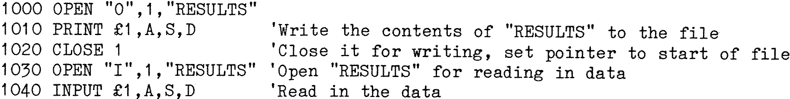

80-Bus News |
May–June 1983 · Volume 2 · Issue 3 |
| Page 17 of 59 |
|---|
MBASIC has excellent disk file handling capabilities; the statements ‘OPEN’ and ‘CLOSE’ do just that. Files may be sequential or random as far as input and output are concerned. The ‘OPEN’ statement has the following format:
OPEN "<mode>",<file number>,"<filename>",[<drive no.>]
<mode> is a single letter string (O,I, or R), which indicates the type of input
or output to or from the file. O implies that the file is opened for results to
be written INTO it (i.e., an output file); I shows that the file is opened so
that data can be read FROM it (i.e., an input file). In both cases, the data
movement is sequential (in order). The R mode is used for random input/output in
groups of up to 128 character records, and any record of a file can be read or
written to at any time; unlike the sequential file, a random file can be written
to or read from at any time.
<file number> is the number of the file as used in the program and is an integer
from 1 to 15; it refers to the file in later I/O operations.
<filename> is the name of the file, and must be enclosed in double quotes.
<drive no.> is the number, usually either 0 or 1, of the disk on which the file
resides, or will be written to. [See Editors’ note under SAVE.]
For example:
OPEN "I",1,"INPUT.DAT" – will open file INPUT.DAT so that data from it can be
read by the program.
OPEN "O",2,"RESULTS" – opens file Results so that data from the program can be
written into it.
OPEN M$,N,F$ – opens the file whose name is in F$ (supplied earlier in the
program, together with M$ and N) as file number N in mode M$.
[Ed. – Mine is different again, in the form:
OPEN <mode>,<file number>,"<[drive name:]filename>",[record length]
All is as above, except that the random access file mode may vary the length of
the records saved between 1 and 128 thus saving disk space.]
This involves the use of the INPUT and PRINT statements: INPUT is used to read data from a file as follows:
INPUT £<file number>,<variable list>
where <file number> is the number of the file OPENed for INPUT and <variable list> is the list of variables which are to be read in as would be the case with a normal INPUT statement, although no ‘?’ prompt is printed. When numeric values are input, leading spaces are ignored but everything else is assumed to be part of the number, which terminates when a space, <cr+lf> or comma is read. When string items are input, the first character which is not a leading space or line feed is assumed to be the start of a string item; if this first character is found to be a ’ " ‘, the item is taken to be a quoted string and all characters between the first quote and a matching second quote are returned as characters in the string value. The string may not be more than 255 characters long and will be terminated before this if a comma, <cr> or <lf> are encountered.
PRINT £<file number>,<variable list> is used to save results to a file.
CLOSE <file number> terminates input or output to that file; CLOSE without a file number, terminates I/O to all files previously opened.
The following example of sequential file I/O for numeric items may be useful:
Files are also closed when the ‘END’ statement or ‘NEW’ command are executed; the ‘STOP’ command does not close files.
| Page 17 of 59 |
|---|